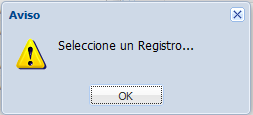

Se ingresa mediante:

Posee las siguientes secciones:
1: Sección de busqueda, donde se introducen los criterios para realizar busqueda en el contenido del grid. Tambien opcion de impresion :
Para visualizar los historicos mediante se debe seleccionar un registro de usuario inicialmente caso contrario:

Una vez seleccionado el usuario se visualizara:

2: Sección del grid, donde se muestran todos las opciones del menu existentes en la Base de Datos, con la opciones:
Ordenar de forma ASC el grid de acuerdo a este campo seleccionado.
Ordenar de forma DESC el grid de acuerdo a este campo seleccionado.
3: Paginacion del grid.
4: Opciones del Adm. Opciones del menu como ser: Crear opcion, Editar opcion, Crear boton, Editar boton y Eliminar Boton.
5: Formulario del menu de opciones, donde se visualizan mas detalles del menu de opciones. (Campos con asterisco son obligatorios)
6: Grid relacion opcion con botones, se visualiza de acuerdo a la opcion seleccionada los botones asignados a la opcion. Tambien se tiene la opcion de imprimir el grid:
CONSIDERACIONES: Los cambios de agregar/quitar opciones o botones si no se reflejan inmediatamente se debe salir del sistema (boton SALIR ) y volver a ingresar.
Created with the Personal Edition of HelpNDoc: Free help authoring tool